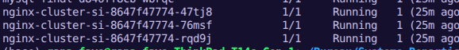

1. Démarche Technique
Ce projet visait à valider le passage d'une gestion manuelle à une infrastructure déclarative. L'état désiré est défini dans des fichiers YAML, et Kubernetes se charge de maintenir cet état.
Le Manifeste de Déploiement :
apiVersion: apps/v1
kind: Deployment
metadata:
name: nginx-deployment
spec:
replicas: 3 # Haute disponibilité
selector:
matchLabels:
app: nginx-server
template:
metadata:
labels:
app: nginx-server
spec:
containers:
- name: nginx
image: nginx:1.25-alpine2. Validation des Commandes
| Objectif | Commande |
|---|---|
| Appliquer le YAML | kubectl apply -f . |
| Scaling horizontal | kubectl scale --replicas=3 |
| Vérification accès | minikube service list |
3. Preuves de succès
Capture A : État des 3 Pods en Running

Capture B : Test d'auto-cicatrisation

Capture C : Rendu final Navigateur

Résultat Final :
Le cluster maintient automatiquement 3 répliques. Si un Pod est supprimé manuellement sur le ThinkPad, K8s en recrée un nouveau en moins de 2s.